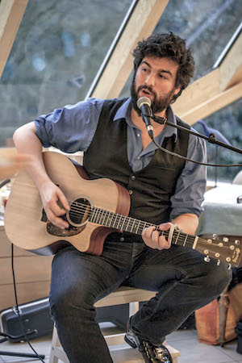

Musicien
Membre du duo chanson et chansigne Albaricate depuis 2014, Samuel Genin compose aussi des musiques pour vos projets scéniques (musique live pour théâtre d'impro) ou numérique (musique pour vos films)


Des concerts, de la musique pour vos projets numériques ou scéniques
Membre du duo chanson et chansigne Albaricate depuis 2014, Samuel Genin compose aussi des musiques pour vos projets scéniques (musique live pour théâtre d'impro) ou numérique (musique pour vos films)
Albaricate, c’est un garçon orchestre et une fille chansigneuse pour 1h10 de concert en Langue des Signes Française et chanson acoustique. On sent tour à tour l'influence du verbe conteur de Thomas Fersen, le swing de Sanseverino, ou l'émotion à fleur de peau de Brel pour ce duo clownesque qui danse les mots et signe les notes. Sam et Clémence vous embarquent, avec le sourire, dans leur univers tantôt pétillant tantôt mélancolique, passant du rire aux larmes au rythme des vibrations.
Duo musical d'art expérimental formé en 2011 par Samuel Genin et Simon Pineau, La Route des Phares interroge et remet en cause les concepts d'album, de chanson mais aussi de texte, de musique et d'artiste en les épuisant dans des formes radicales, favorisant l'écriture sous contrainte ou spontanée et l'improvisation, en tentant de rejeter le conventionnel et le jugement. Pouvant être qualifié « d'Anti-chanson française Punko-acoustique », le groupe manie aussi beaucoup l'humour et l’auto-dérision. C’est toujours un massacre en règle des codes de représentation de la musique et du rapport conventionnel artiste/spectateur.
D’abord comédien d’improvisation avant de devenir musicien pour ce même art, Samuel Genin à un oeil affuté sur les mécanismes de jeu et le rythme des comédien.ne.s, sachant venir soutenir l’action au moment voulu, ou au contraire les prendre à contrepied, pour donner un coup de clé de sol dans la fourmilière. Plutôt acoustique qu’électronique, il peut se déplacer facilement sur tous type de spectacles.